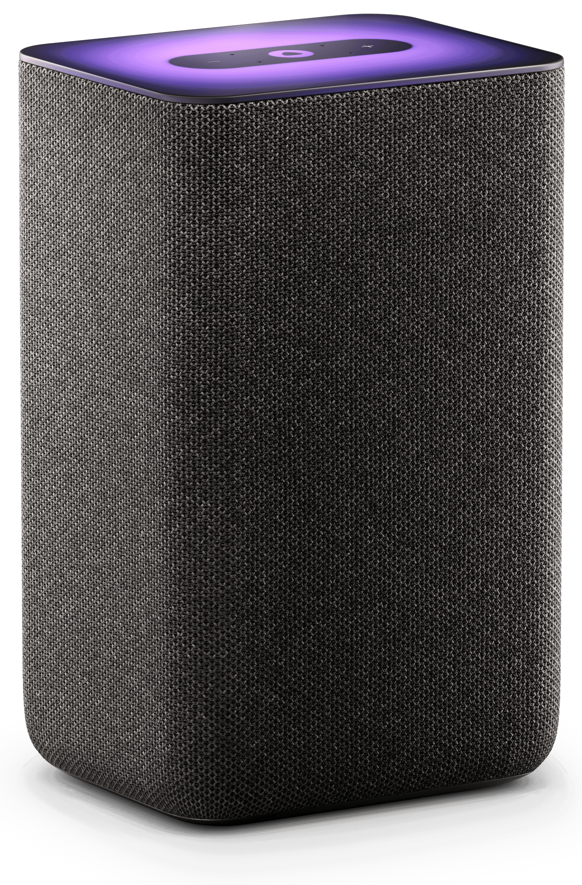
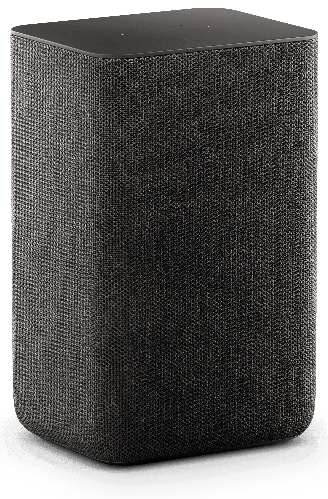
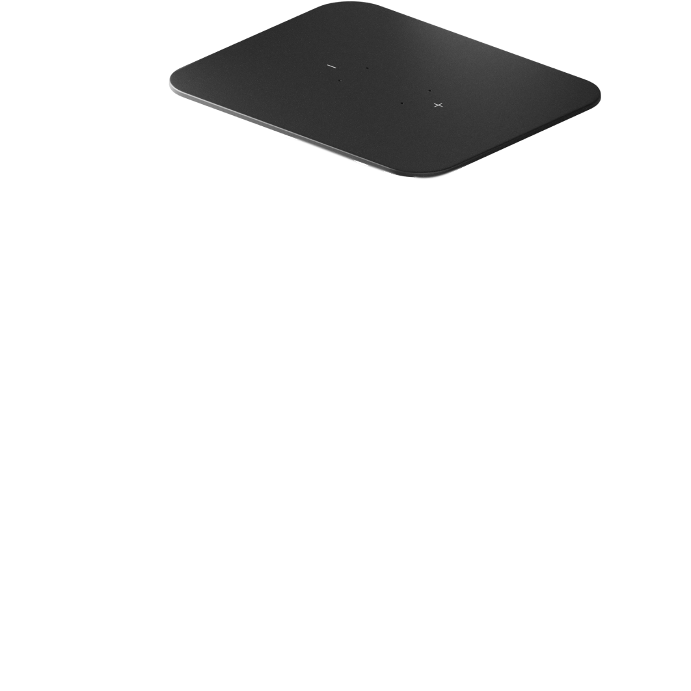
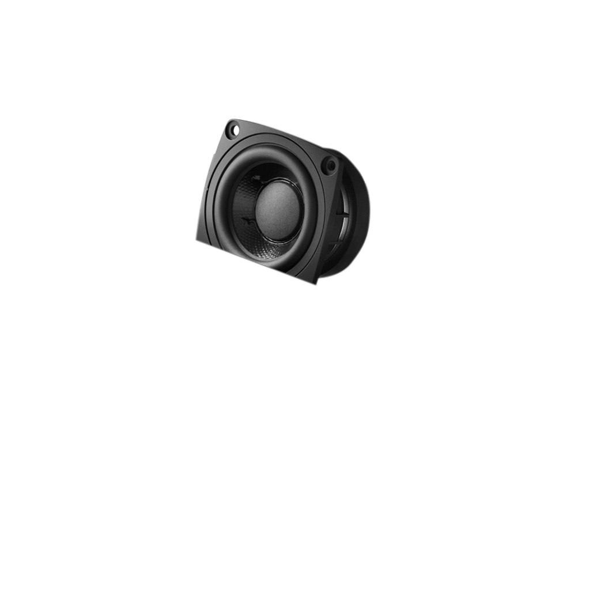
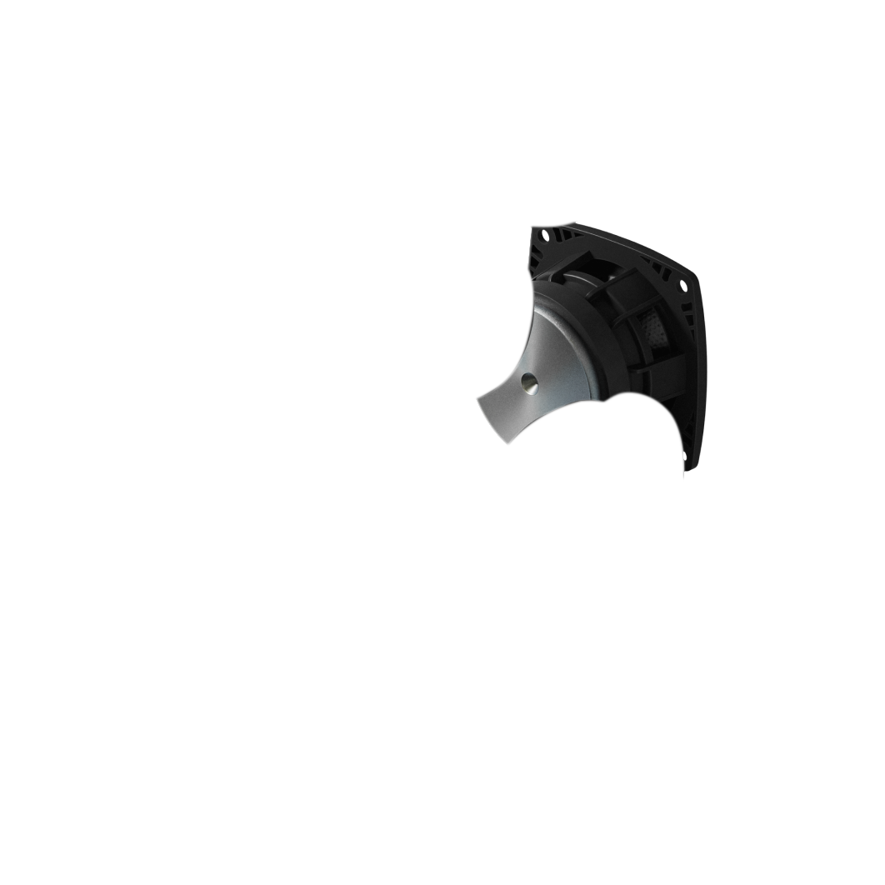
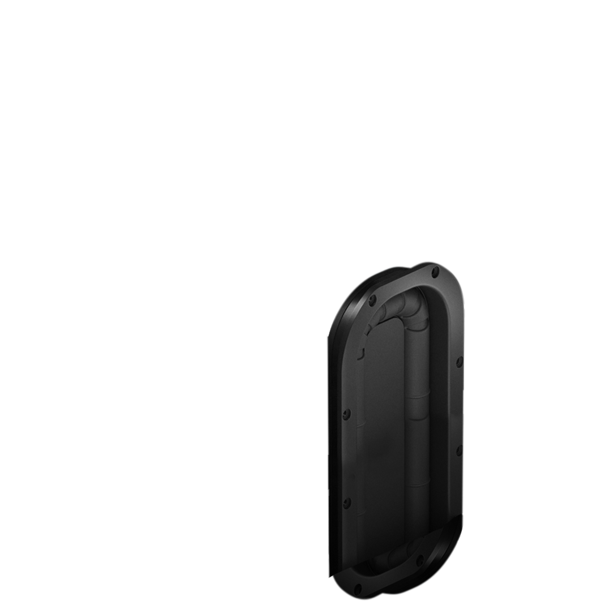
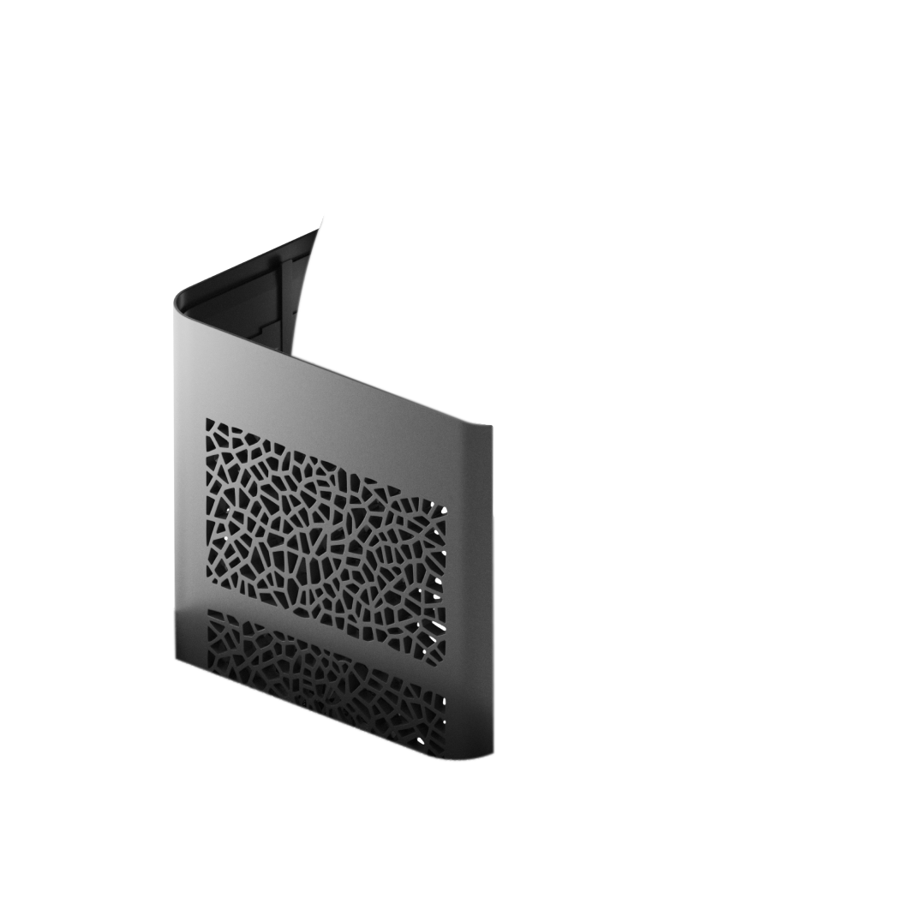
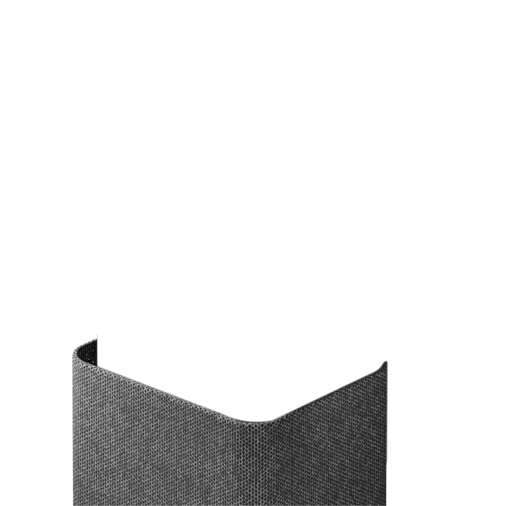

Новая Яндекс Станция
Умная колонка второго поколения с лаконичным дизайном и чистым звуком станет центром вашего умного дома с Алисой


Звук
Слушайте любимую музыку с чистым объёмным звучанием, куда бы ни поставили колонку
Апериодическая решётка
Защищает звук от искажений при воспроизведении
Room Correction
Подстраивает звучание под размеры и форму помещения
30 Вт





